Thursday 26 November · 19:00–21:00 CET
REconnect
To feel again
Step out of autopilot to recover presence and listening. Reconnect with your body, your emotions, your sensitivity and what you need.
REconnect to feel again.
With you and with Life. There is something essential in you
that you do not need to find, only remember.
Perhaps you, too, are feeling this inner call.
We are living in intense times, times of great change for humanity. Times to awaken and renew the way we see. Times to release what we have never truly been, and to come closer to the divine essence of who we are.
Many of us women are beginning to feel a call to awaken the sacred feminine, to listen to ourselves and to feel ourselves amid so much mental noise and so much information that confuses us.
At some point along the way, we realise we have been disconnecting from ourselves and from the very Source of Life. We may then begin to feel a deeper need to be alone, to let a part of us die so that something new can come to life.
An inner need to care for ourselves with more love, and to live with more presence and connection to our true self.
A whisper reaches the heart, inviting us to listen to the voice of our soul, to release emotions and thoughts that consume us, to feel every fibre of our skin with tenderness, and to come into contact with a deeper dimension that is part of our Origin.
If you are feeling this inner call, you are most welcome to join us and REconnect. Four days to begin aligning your heart, your mind and your body with your soul and the Divine Presence.
Through this experience your mind begins to settle, your heart begins to open, and your whole being becomes more available to intuition, to trust and to Love.
An inspiring space, full of love, to feel your body with softness, to open the listening of the heart, and to bring clarity to your mind in the face of the thoughts that confuse us and disconnect us.
A space to listen to what is born from your soul and to deepen your bond with your essence and with Life.
REC is the movement of returning to your natural essence. A path to bring back to the heart and to awareness all that is part of who you are.
There are things that need to be recognised, felt and brought back into awareness.
We will meet for four consecutive days, live on Zoom, from 26 to 29 November 2026. Each encounter lasts about two hours and combines teachings, reflection, inner-connection practices, meditation and integration.
All four sessions will be recorded so that you can watch them later if you cannot join us live. Times are for mainland Spain (CET).
Thursday 26 November · 19:00–21:00 CET
To feel again
Step out of autopilot to recover presence and listening. Reconnect with your body, your emotions, your sensitivity and what you need.
REconnect to feel again.
Friday 27 November · 19:00–21:00 CET
To accept with love what you have lived
Create a space of acceptance and love to embrace what you feel and what you have lived. Reconcile with yourself, with your story and with life.
REconcile to open the heart.
Saturday 28 November · 18:00–20:00 CET
To free the mind from what you are not
Observe your thoughts, beliefs and conditionings to recognise what truly belongs to you and what you have learned, assumed or believed to be true.
REcognize so you can release.
Sunday 29 November · 18:00–20:00 CET
To reconnect with the soul and with God
Go beyond thoughts, roles and personal history to listen to what is born from your soul and your bond with God.
REmember who you are to live from Love.
An experience of reconnection with yourself and with life.
REConecta is an invitation to create the conditions to listen to yourself more deeply.
REConecta does not pretend that in four days your life will be solved. Nor do I want to promise that every circumstance that worries you today will disappear.
I want to propose something different: to create, for four days, a sacred space in which you can return to yourself.
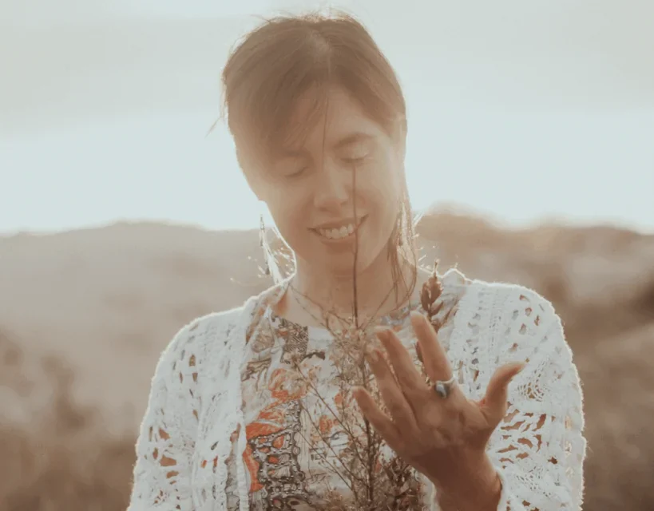
From mental noise to presence, from demand to love, from disconnection to listening…
Perhaps you are not looking for immediate answers. Perhaps you need a cared-for place to listen to yourself, to feel, and to remember what is essential in you.
If any of these words resonate in you, this space may be for you.
Live on Zoom.
A space for accompaniment, reflection and integration.
To return to the four sessions whenever you need them.
I am Zuzel Amelia and for years I have accompanied people through processes of transformation and inner reconnection.
The way I understand transformation integrates body, emotions, mind, soul and our connection with the Origin: with God.
My mission is to guide you, inspire you and accompany you, so that you return to the path of your soul, to the divine essence of who you are, and remember the purpose of love for which you are here.
To remember the truth of who we are, so we can live from love.
REConecta is also born from my own path and from a certainty that gives meaning to my life and to my work.
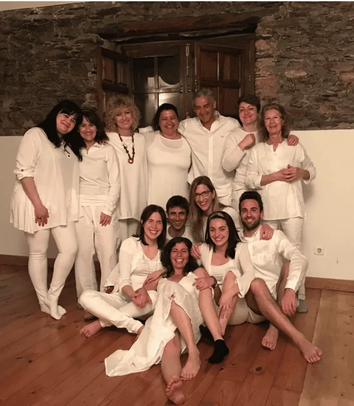
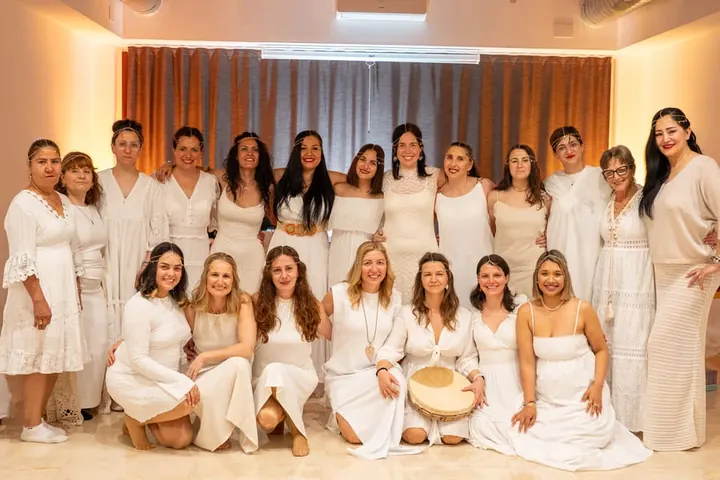
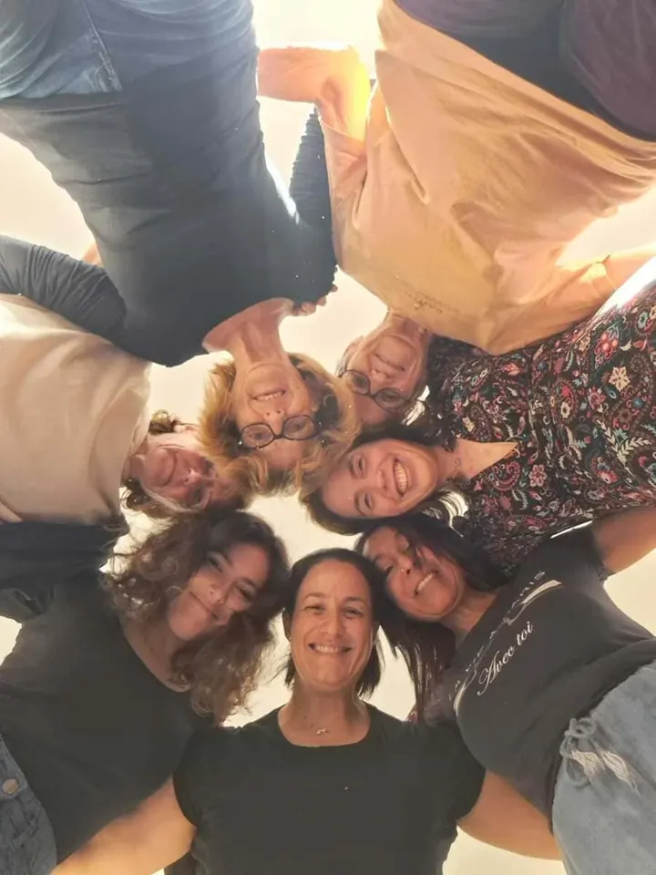
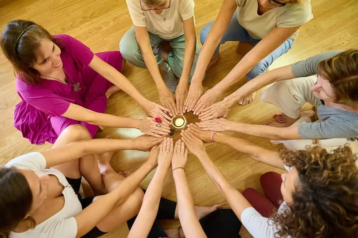
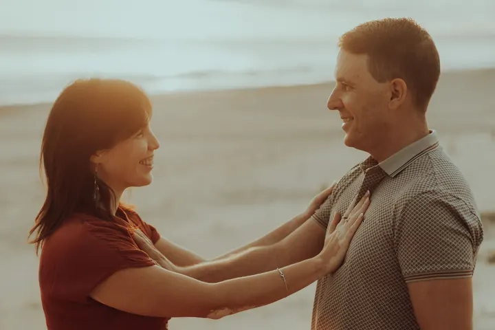
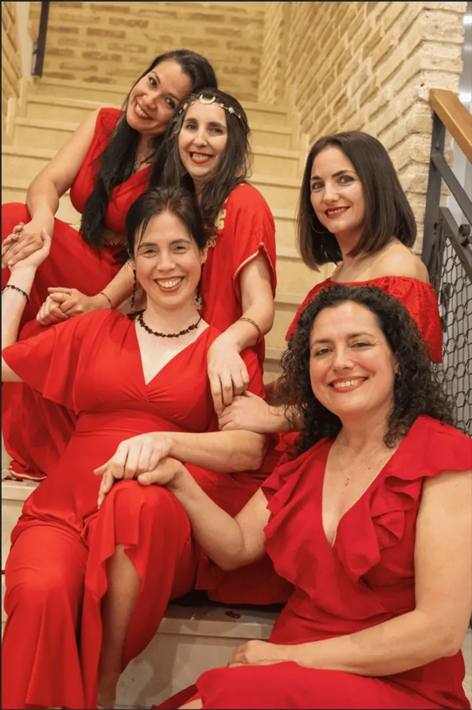
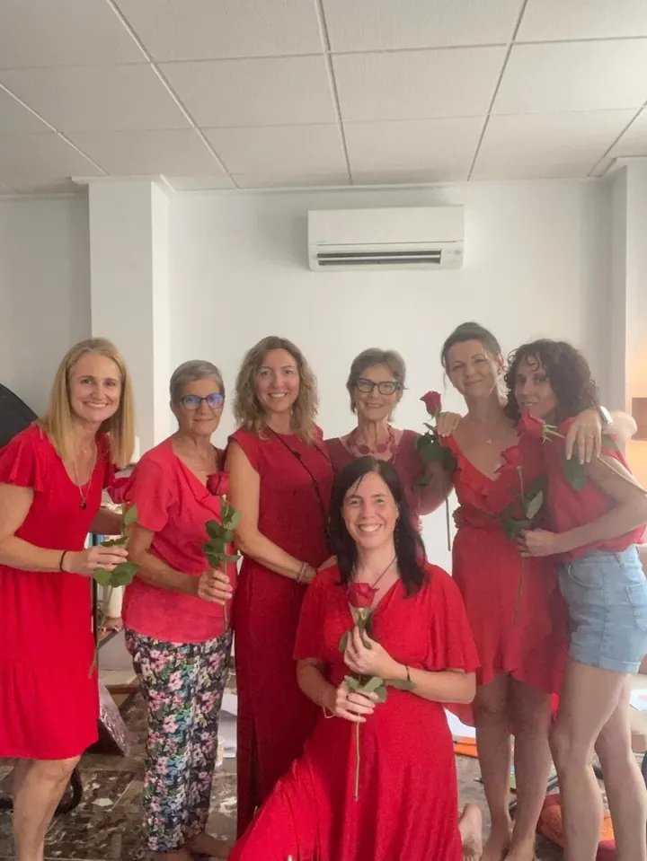
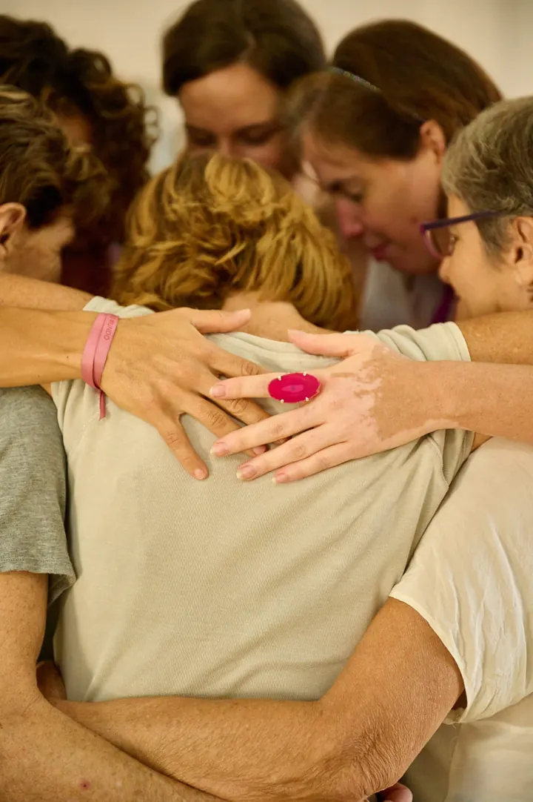
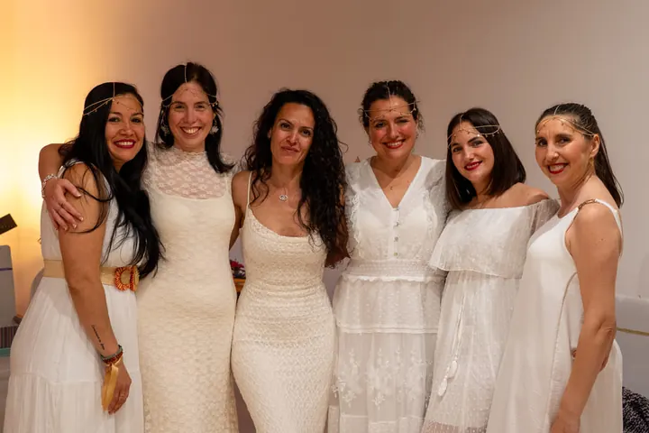
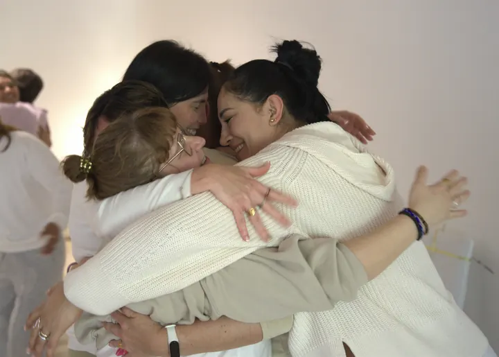
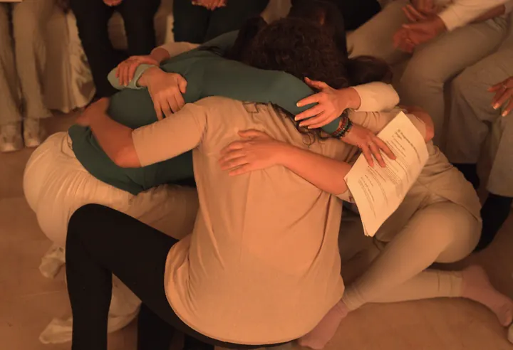
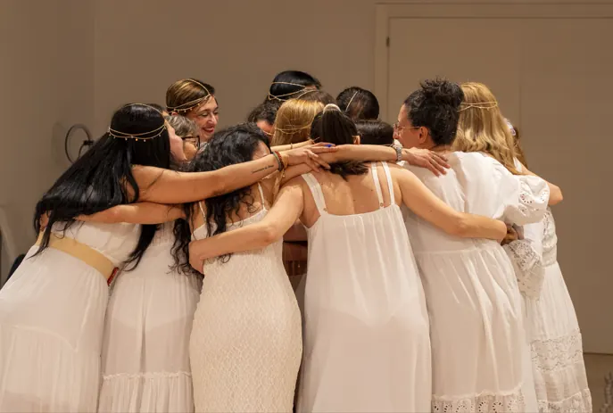
If you have questions about REConecta, you can write to me and I will answer you with all my love.
No. You can take part whether you have been walking a path of inner growth for years or are just beginning.
All four sessions will be recorded and you will have access to them afterwards.
No. You can live the experience from your own intimacy and take part only as far as you feel comfortable.
No. We will speak of God and of our spiritual dimension from an open, loving gaze, free of dogma. You do not need to belong to any religion or share a particular doctrine.
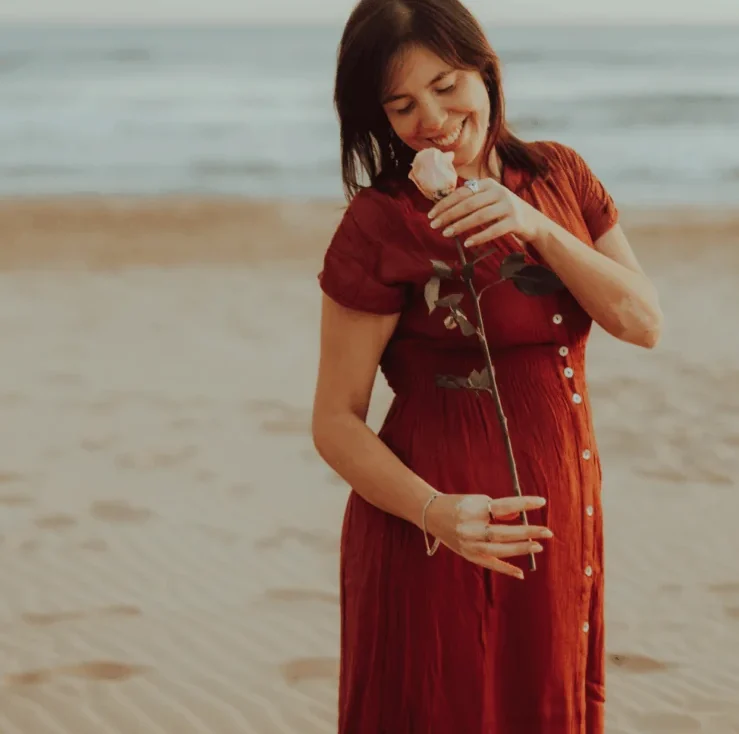
To remember is to bring back to the heart what we are. When you remember who you are, the way you live changes.
I do not want to convince you that you need REConecta. I want to invite you to feel whether this experience makes sense for you.
If something inside you is asking to listen, to feel and to remember, for four days we will open that space together.
A journey from the Body to the Heart, from the Heart to the Soul, and from the Soul to the Origin.
I want to live REConectaTell me what you need and I will reply as soon as I can.